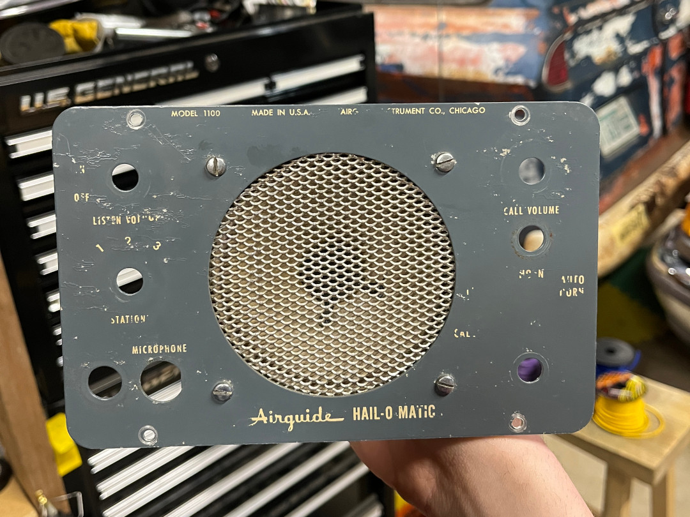
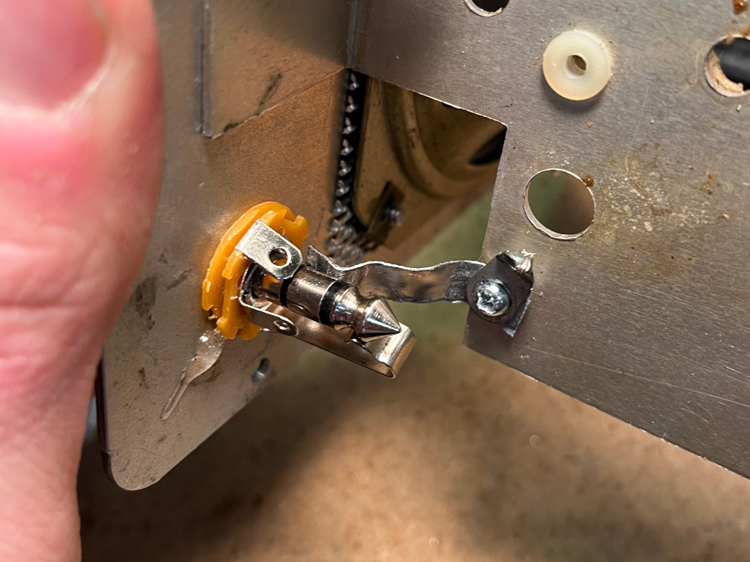
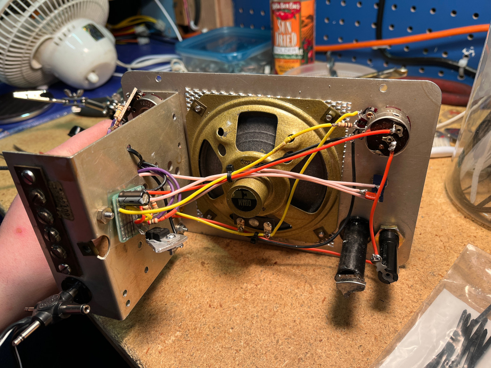
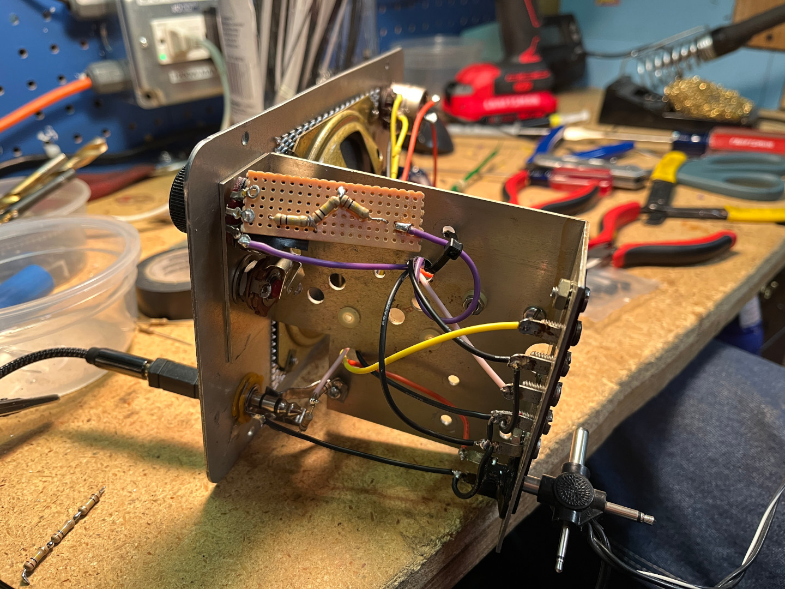

Hail-O-Matic Amp
I went to Hamfest last weekend, where i found lots of cool vintage equipment. most of which i couldn't afford. However there were lots of bins that were labeled "6 for $1" or something similar. In one of those bins was sitting this: an Airguide Hail-O-Matic, from probably somewhere around the 60s. Now, doing some light research, I could only find one other mention online of the Airguide Hail-O-Matic, and it's on an auction site. I also found this page, which goes into more depth about the history of Airguide.
Anyways, this one was in kinda rough shape. It was missing two dials, and the screws that held the front panel to the rest of the body.

So I opened it up, and found lots of wires. like, a lot of wires.
So I took a few hours and desoldered absolutely everything from everything, and put all of the components into a ziploc bag to be added to my spare parts bin.
My goal with this project was to actually build my own circuit, instead of what I have done before, where I'd just take the guts of a cheap bluetooth speaker and retrofit it.
Thankfully I had a bunch of extra TDA2030A ICs from my IKEA power strip distortion pedal project, so that was the op-amp chip I went with for this.

I took off all of the dials and things from the front plate, cleaned the front plate, cleaned the speaker grille, then put the speaker back on it. Clean!
I 3d-printed two pieces, the first was a grommet to fit a barrel-style power jack. The second was a tube to fit a 1/4" to 3.5mm adapter, and I epoxy'd two pieces of hard drive magnet to the end of the tube so that the adapter will stay inside the tube. If you shake it really hard it'll fall out, but if it's being shaken that hard, there's bigger issues.

judge me all you want, but it works. I didn't have a stereo 1/4" jack, so I had to make do with what I had.
 Here's the final wiring. I reused the original potentiometers, both because the one on the left had an on/off switch, and also because the original dials wouldn't fit on any of my potentiometers. they only had like 400 something ohms of resistance in them, which was enough for the volume knob, but nowhere near enough for the gain knob. so I have three 100kΩ resistors going into the potentiometer to get the right gain. does the potentiometer make any noticeable difference? no. am i keeping it? yes.
For anyone curious, here's the schematic for it. notice the fuse is not there, because I forgot it. I'm lazy.

so that's pretty much it